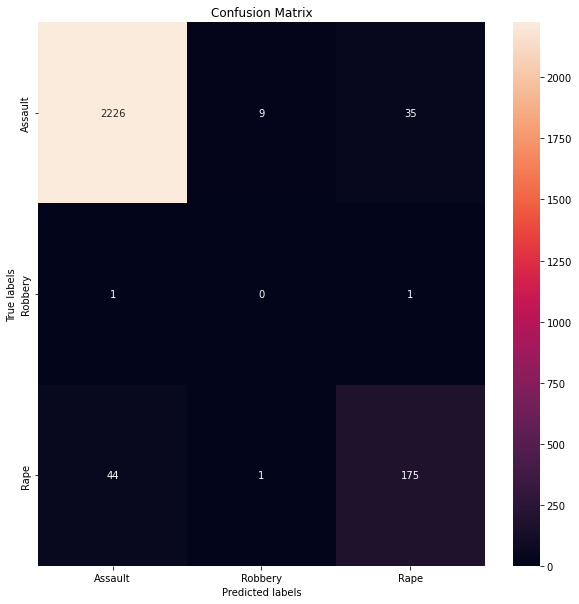
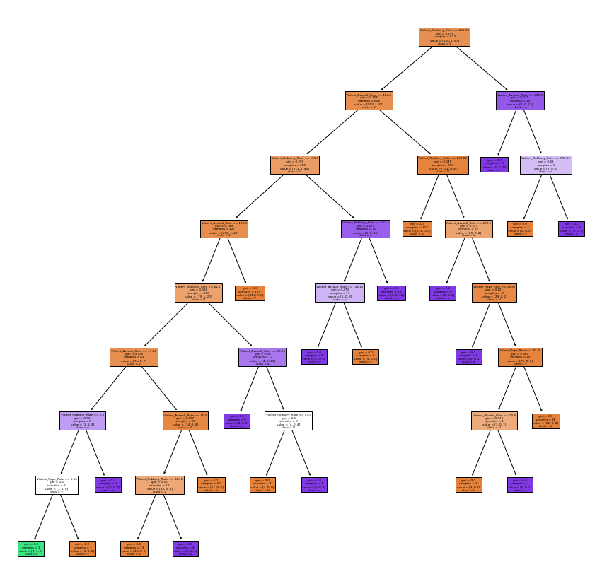
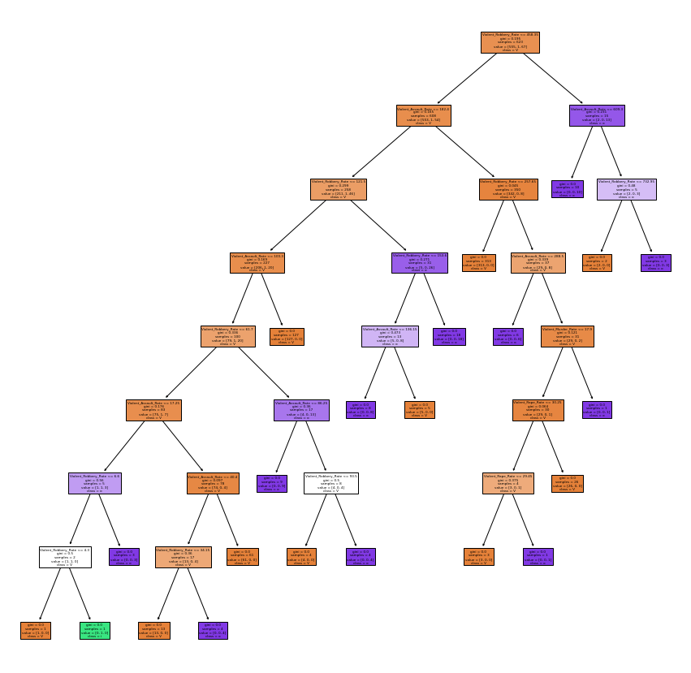

The decision tree technique will primarily use victim record data since it provides a highly effective structure within which to lay out options and analyze the potential repercussions of those options. They also assist you in developing a balanced picture of the risks and benefits of each conceivable course of action.
ABOUT THE DATA
The record data that Decision Tree used relates to the categories of violent crime that include homicide (including murder and non-negligent manslaughter), robbery, and serious assault. Violent crime also includes rape. Offenses classified as violent involve the actual use of, or the threat to use, physical force.
Only offenses for which a report has been filed are included in the data displayed on the Crime Data Explorer; it is not a comprehensive record of all crimes. Understanding the multiple factors that contribute to criminal behavior and the reporting of crimes in a community is essential before attempting to analyze the data. In the absence of these considerations, the data that are currently available may be deceptive. The size and density of the population, the economy, the unemployment rate, the policies regarding prosecution, the judiciary, and corrections, the administrative and investigative focus of law enforcement, how people feel about crime and the police, and the actual strength of the police force are all important factors to consider.
The dataset consists of three categories of information regarding victims of violent crimes: their age, gender and race together with the various types of crimes that they were victims of.
IMPORT LIBRARIES
Code
import pandas as pdimport seaborn as sns import matplotlib.pyplot as pltfrom sklearn import treefrom IPython.display import Imageimport numpy as npfrom sklearn.metrics import accuracy_scorefrom sklearn.metrics import precision_scorefrom sklearn.metrics import recall_scorefrom sklearn.metrics import confusion_matriximport warningswarnings.filterwarnings('ignore')
For the above datasets, columns that aren’t necessary are deleted, and it is determined whether or not the dataset contains any values that are not applicable or duplicates.
Code
#CLEAN THE DATA#AGE DATA#REMOVE THE FIRST COLUMN age_data = age_data.drop(columns=['Unnamed: 0', 'Offense'])#CHECK FOR MISSING VALUESage_null_count = age_data.isnull().sum()#GENDER DATA#REMOVE THE FIRST COLUMN gender_data = gender_data.drop(columns=['Unnamed: 0','Offense'])#CHECK FOR MISSING VALUESgender_null_count = gender_data.isnull().sum()#RACE DATA#REMOVE THE FIRST COLUMNrace_data = race_data.drop(columns=['Unnamed: 0'])#CHECK FOR MISSING VALUESrace_null_count = race_data.isnull().sum()#STATE DATA#CHECK FOR MISSING VALUESstate_null_count = state_data.isnull().sum()
DATA SUMMARY:
In Python, the describe function can be used to get descriptive or summary statistics (). Describe The function gives the mean, standard deviation, IQR, minimum value, maximum value, mode and so on.
VICTIM AGE DATA SUMMARY
Code
#SUMMARIZE THE AGE DATAage_data_describe = age_data.describe().loc[['min','mean','max']]age_data_dtype = age_data.dtypesage_data_describe = age_data_describe.append(age_data_dtype,ignore_index=True)age_data_describe = age_data_describe.rename(index={0:'min',1:'mean',2:'max',3:'dtype'})age_data_describe = age_data_describe.transpose()print(age_data_describe)
#SUMMARIZE THE GENDER DATA df_describe = gender_data.describe().loc[['min','mean','max']]df_dtype = gender_data.dtypesdf_describe = df_describe.append(df_dtype,ignore_index=True)df_describe = df_describe.rename(index={0:'min',1:'mean',2:'max',3:'dtype'})df_describe = df_describe.transpose()print(df_describe)
min mean max dtype
Male 335.0 138022.5 508037.0 int64
Female 1659.0 119444.0 549220.0 int64
category NaN NaN NaN object
VICTIM RACE DATA SUMMARY
Code
#SUMMARIZE THE RACE DATA df_describe = race_data.describe().loc[['min','mean','max']]df_dtype = race_data.dtypesdf_describe = df_describe.append(df_dtype,ignore_index=True)df_describe = df_describe.rename(index={0:'min',1:'mean',2:'max',3:'dtype'})df_describe = df_describe.transpose()print(df_describe)
min mean max \
White 459.0 1509511.888889 5372573.0
Black_or_African_American 60.0 648793.833333 2088414.0
American_Indian_or_Alaska_Native 9.0 27830.5 86370.0
Asian 8.0 42430.166667 166046.0
Native_Hawaiian_or_Other_Pacific_Islander 0.0 5009.888889 16887.0
Unknown 35.0 134815.111111 537555.0
category NaN NaN NaN
dtype
White int64
Black_or_African_American int64
American_Indian_or_Alaska_Native int64
Asian int64
Native_Hawaiian_or_Other_Pacific_Islander int64
Unknown int64
category object
min mean max dtype
Year 1960.0 1989.544141 2019.0 int64
Population 226167.0 9708501.690209 328239523.0 int64
Property_Crime_Rate 573.1 3542.202311 9512.1 float64
Property_Burglary_Rate 126.3 876.53252 2906.7 float64
Property_Larceny_Rate 293.3 2322.659133 5833.8 float64
Property_Motor_Rate 28.4 343.0113 1839.9 float64
Violent_Crime_Rate 9.5 397.877047 2921.8 float64
Violent_Assault_Rate 3.6 237.36504 1557.6 float64
Violent_Murder_Rate 0.2 6.477207 80.6 float64
Violent_Rape_Rate 0.8 30.179872 161.6 float64
Violent_Robbery_Rate 1.9 123.853258 1635.1 float64
State NaN NaN NaN object
DECISION TREE
A decision tree is an aid to decision making that employs a tree-like model of decisions and the potential implications, such as the outcomes of random events, the costs and benefits of resources, and the overall value of the decision. If your method consists only of if/then statements, this is one approach to present it.
As a prominent tool in machine learning, decision trees are also widely used in the field of operations research, particularly in the field of decision analysis, to determine which course of action is most likely to result in the desired outcome.
Each node inside a decision tree represents a “test” on an attribute (such as whether a coin is headed up or down), each branch reflects the result of that test, and each leaf node represents a class label (decision taken after computing all attributes). The branches stand for different kinds of categorization schemes.
Split the dataset into training and testing sets
The data is separated into training data and testing data, and each of the three datasets contains unique information. Before continuing, the number of samples that will be used for each sample will be calculated.
HYPER-PARAMETERS TUNING
The features of the model known as parameters are those that are learned by the model from the data. On the other hand, hyperparameters are arguments that are accepted by a model-making function. These hyperparameters can be adjusted to reduce overfitting, which ultimately results in a model that is more generalizable. The method of hyperparameter tuning, which involves calibrating our model by determining which hyperparameters should be used to extend our model, has been given its own name.
FOR VICTIM AGE DATA
DATA NORMAIZATION
Code
#THE LOAD BALANCE AND COUNT THE NUMBER OF SAMPLES FOR EACH CATEGORYfrom locale import normalizeCrime_Type_Grave_count = age_data['Crime_Type'].value_counts()['Grave']Crime_Type_NotGrave_count = age_data['Crime_Type'].value_counts()['NotGrave']Crime_Type_Grave_norm = age_data['Crime_Type'].value_counts(normalize =True)['Grave']Crime_Type_NotGrave_norm = age_data['Crime_Type'].value_counts(normalize =True)['NotGrave']print("Number of points with category Grave: {0:2d}{1:}".format(Crime_Type_Grave_count, Crime_Type_Grave_norm))print("Number of points with category Not Grave: {0:2d}{1:}".format(Crime_Type_NotGrave_count, Crime_Type_NotGrave_norm))
Number of points with category Grave: 9 0.5294117647058824
Number of points with category Not Grave: 8 0.47058823529411764
SPLITTING DATA INTO TRAINING AND TESTING DATA IN SKLEARN
Code
#MAKE DATA-FRAMES (or numpy arrays) (X,Y) WHERE Y="category" COLUMN and X="everything else"X = age_data.drop(columns = ['Crime_Type'])Y = age_data['Crime_Type']#PARTITION THE DATASET INTO TRAINING AND TEST SETSfrom sklearn.model_selection import train_test_splitx_train, x_test, y_train, y_test = train_test_split(X, Y, test_size=0.62, random_state=2)#CONSISTENCY CHECKprint(type(x_train))print("X train shape: ",x_train.shape)print(type(y_train))print("Y train shape: ",y_train.shape)print(type(x_test))print("X test shape: ",x_test.shape)print(type(y_test))print("Y test shape",y_test.shape)
<class 'pandas.core.frame.DataFrame'>
X train shape: (6, 14)
<class 'pandas.core.series.Series'>
Y train shape: (6,)
<class 'pandas.core.frame.DataFrame'>
X test shape: (11, 14)
<class 'pandas.core.series.Series'>
Y test shape (11,)
DECISION TREE MODEL FOR VICTIM AGE DATA
Code
#set seednp.random.seed(2)# TRAIN A SKLEARN DECISION TREE MODEL ON x_train,y_train from sklearn import treemodel = tree.DecisionTreeClassifier()model = model.fit(x_train, y_train)#MAKE PREDICTIONS FOR THE TRAINING AND TEST SET yp_train = model.predict(x_train)yp_test = model.predict(x_test)
#### TRAIN A SKLEARN DECISION TREE MODEL ON x_train,y_train from sklearn import treemodel = tree.DecisionTreeClassifier(max_depth=18)model = model.fit(x_train, y_train)yp_train=model.predict(x_train)yp_test=model.predict(x_test)# THE MODEL ON THE TEST SETprint("------TEST------")confusion_plot(y_test,yp_test)plot_tree(model,X,Y)
INFERENCE FOR VICTIM AGE DECISION MODEL: - The split ratio of teh model is 62% of training data and rest as testinf data, it is categoried with crime type variable(grave and not grave). - The accurary of the model before hyper-parametric tuning is 73%. - The accuracy of the model after hyper parametric tuning has slightly increased to 82%. - The model is not underfitting as accuracy is greater than 50%. - The decision tree visulization is about the Age over 65 and Unknown Age of the data, which classifies into different samples. As the sample of the data is very small and the data category is less, the decision tree doesn’t have huge classification if the data. - As the max_depth increases, the accuracy increases and the optimal tree becomes better.
NOTE: Since the dataset is small and the accuracy of the model is high, the graph for hyperparametric isn’t required as the graph shows similar results for training and testing data.
FOR VICTIM GENDER DATA
DATA NORMAIZATION
Code
#THE LOAD BALANCE AND COUNT THE NUMBER OF SAMPLES FOR EACH CATEGORYfrom locale import normalizecategory_male_count = gender_data['category'].value_counts()['Male']category_female_count = gender_data['category'].value_counts()['Female']category_male_norm = gender_data['category'].value_counts(normalize =True)['Male']category_female_norm = gender_data['category'].value_counts(normalize =True)['Female']print("Number of points with category white: {0:2d}{1:}".format(category_male_count, category_male_norm))print("Number of points with category black: {0:2d}{1:}".format(category_female_count, category_female_norm))
Number of points with category white: 10 0.625
Number of points with category black: 6 0.375
SPLITTING DATA INTO TRAINING AND TESTING DATA IN SKLEARN
Code
#MAKE DATA-FRAMES (or numpy arrays) (X,Y) WHERE Y="category" COLUMN and X="everything else"X = gender_data.drop(columns = ['category'])Y = gender_data['category']#PARTITION THE DATASET INTO TRAINING AND TEST SETSfrom sklearn.model_selection import train_test_splitx_train, x_test, y_train, y_test = train_test_split(X, Y, train_size=.52, random_state=2)#CONSISTENCY CHECKprint(type(x_train))print("X train shape: ",x_train.shape)print(type(y_train))print("Y train shape: ",y_train.shape)print(type(x_test))print("X test shape: ",x_test.shape)print(type(y_test))print("Y test shape",y_test.shape)
<class 'pandas.core.frame.DataFrame'>
X train shape: (8, 2)
<class 'pandas.core.series.Series'>
Y train shape: (8,)
<class 'pandas.core.frame.DataFrame'>
X test shape: (8, 2)
<class 'pandas.core.series.Series'>
Y test shape (8,)
DECISION TREE MODEL FOR VICTIM GENDER DATA
Code
#set seednp.random.seed(2)# TRAIN A SKLEARN DECISION TREE MODEL ON x_train,y_train from sklearn import treemodel = tree.DecisionTreeClassifier()model = model.fit(x_train, y_train)#MAKE PREDICTIONS FOR THE TRAINING AND TEST SET yp_train = model.predict(x_train)yp_test = model.predict(x_test)
#### TRAIN A SKLEARN DECISION TREE MODEL ON x_train,y_train from sklearn import treemodel = tree.DecisionTreeClassifier(max_depth=18)model = model.fit(x_train, y_train)yp_train=model.predict(x_train)yp_test=model.predict(x_test)# THE MODEL ON THE TEST SETprint("------TEST------")confusion_plot(y_test,yp_test)plot_tree(model,X,Y)
INFERENCE FOR VICTIM GENDER DECISION MODEL: - The split ratio of teh model is 52% of training data and rest as testinf data, it is categoried with category variable(male and female). - The accurary of the model before and after hyper-parametric tuning is 88%. - The model is not underfitting as accuracy is greater than 50%. - As the max_depth increases, the accuracy increases and the optimal tree becomes better. - The decision tree visulization is about the Male and Female category of the data, which classifies into different samples.
NOTE: Since the dataset is small and the accuracy of the model is high, the graph for hyperparametric isn’t required as the graph shows similar results for training and testing data.
FOR VICTIM RACE DATA
DATA NORMALIZATION
Code
#THE LOAD BALANCE AND COUNT THE NUMBER OF SAMPLES FOR EACH CATEGORYfrom locale import normalizecategory_white_count = race_data['category'].value_counts()['White']category_black_count = race_data['category'].value_counts()['Black_or_African_American']category_white_norm = race_data['category'].value_counts(normalize =True)['White']category_black_norm = race_data['category'].value_counts(normalize =True)['Black_or_African_American']print("Number of points with category white: {0:2d}{1:}".format(category_white_count, category_white_norm))print("Number of points with category black: {0:2d}{1:}".format(category_black_count, category_black_norm))
Number of points with category white: 8 0.4444444444444444
Number of points with category black: 10 0.5555555555555556
SPLITTING DATA INTO TRAINING AND TESTING DATA IN SKLEARN
Code
#MAKE DATA-FRAMES (or numpy arrays) (X,Y) WHERE Y="category" COLUMN and X="everything else"X = race_data.drop(columns = ['category'])Y = race_data['category']#PARTITION THE DATASET INTO TRAINING AND TEST SETSfrom sklearn.model_selection import train_test_splitx_train, x_test, y_train, y_test = train_test_split(X, Y, train_size=.52, random_state=2)#CONSISTENCY CHECKprint(type(x_train))print("X train shape: ",x_train.shape)print(type(y_train))print("Y train shape: ",y_train.shape)print(type(x_test))print("X test shape: ",x_test.shape)print(type(y_test))print("Y test shape",y_test.shape)
<class 'pandas.core.frame.DataFrame'>
X train shape: (9, 6)
<class 'pandas.core.series.Series'>
Y train shape: (9,)
<class 'pandas.core.frame.DataFrame'>
X test shape: (9, 6)
<class 'pandas.core.series.Series'>
Y test shape (9,)
DECISION TREE MODEL FOR VICTIM RACE DATA
Code
#set seednp.random.seed(2)# TRAIN A SKLEARN DECISION TREE MODEL ON x_train,y_train from sklearn import treemodel = tree.DecisionTreeClassifier()model = model.fit(x_train, y_train)#MAKE PREDICTIONS FOR THE TRAINING AND TEST SET yp_train = model.predict(x_train)yp_test = model.predict(x_test)
#### TRAIN A SKLEARN DECISION TREE MODEL ON x_train,y_train from sklearn import treemodel = tree.DecisionTreeClassifier(max_depth=50)model = model.fit(x_train, y_train)yp_train=model.predict(x_train)yp_test=model.predict(x_test)# THE MODEL ON THE TEST SETprint("------TEST------")confusion_plot(y_test,yp_test)plot_tree(model,X,Y)
INFERENCE FOR VICTIM RACE DECISION MODEL: - The split ratio of teh model is 52% of training data and rest as testinf data, it is categoried with race category variable. - The accurary of the model before and after hyper-parametric tuning is 89%. - The model is not underfitting as accuracy is greater than 50%. - As the max_depth increases, the accuracy increases and the optimal tree becomes better. - The decision tree visulization is about White and Pacific Islander category of the data, which classifies into different samples.
NOTE: Since the dataset is small and the accuracy of the model is high, the graph for hyperparametric isn’t required as the graph shows similar results for training and testing data.
FOR VIOLENT CRIME CATEGORY DATA
DATA NORMLIZATION
Code
#create new column with the predicted categorystate_data['Violent_label'] = state_data[['Violent_Assault_Rate', 'Violent_Murder_Rate','Violent_Rape_Rate','Violent_Robbery_Rate']].idxmax(axis=1)#create table for only property crime datasetsviolent_df = state_data[['Violent_Assault_Rate', 'Violent_Murder_Rate','Violent_Rape_Rate','Violent_Robbery_Rate','Violent_label']].copy()#THE LOAD BALANCE AND COUNT THE NUMBER OF SAMPLES FOR EACH CATEGORYfrom locale import normalizeViolent_Assault_Rate_count = violent_df['Violent_label'].value_counts()['Violent_Assault_Rate']Violent_Robbery_Rate_count = violent_df['Violent_label'].value_counts()['Violent_Robbery_Rate']Violent_Rape_Rate_count = violent_df['Violent_label'].value_counts()['Violent_Rape_Rate']Violent_Rape_Rate_norm = violent_df['Violent_label'].value_counts(normalize =True)['Violent_Rape_Rate']Violent_Assault_Rate_norm = violent_df['Violent_label'].value_counts(normalize =True)['Violent_Assault_Rate']Violent_Robbery_Rate_norm = violent_df['Violent_label'].value_counts(normalize =True)['Violent_Robbery_Rate']print("Number of points with category Assualt: {0:2d}{1:}".format(Violent_Assault_Rate_count, Violent_Assault_Rate_norm))print("Number of points with category Robbery: {0:2d}{1:}".format(Violent_Robbery_Rate_count, Violent_Robbery_Rate_norm))print("Number of points with category Rape: {0:2d}{1:}".format(Violent_Rape_Rate_count, Violent_Rape_Rate_norm))
Number of points with category Assualt: 2825 0.9069020866773676
Number of points with category Robbery: 287 0.09213483146067415
Number of points with category Rape: 3 0.0009630818619582664
SPLITTING DATA INTO TRAINING AND TESTING DATA IN SKLEARN
Code
#MAKE DATA-FRAMES (or numpy arrays) (X,Y) WHERE Y="category" COLUMN and X="everything else"X = violent_df.drop(columns = ['Violent_label'])Y = violent_df['Violent_label']#PARTITION THE DATASET INTO TRAINING AND TEST SETSfrom sklearn.model_selection import train_test_splitx_train, x_test, y_train, y_test = train_test_split(X, Y, test_size=0.8, random_state=2)#CONSISTENCY CHECKprint(type(x_train))print("X train shape: ",x_train.shape)print(type(y_train))print("Y train shape: ",y_train.shape)print(type(x_test))print("X test shape: ",x_test.shape)print(type(y_test))print("Y test shape",y_test.shape)
<class 'pandas.core.frame.DataFrame'>
X train shape: (623, 4)
<class 'pandas.core.series.Series'>
Y train shape: (623,)
<class 'pandas.core.frame.DataFrame'>
X test shape: (2492, 4)
<class 'pandas.core.series.Series'>
Y test shape (2492,)
DECISION TREE MODEL FOR VIOLENT CRIME CATEGORY DATA
Code
#set seednp.random.seed(2)# TRAIN A SKLEARN DECISION TREE MODEL ON x_train,y_train from sklearn import treemodel = tree.DecisionTreeClassifier()model = model.fit(x_train, y_train)#MAKE PREDICTIONS FOR THE TRAINING AND TEST SET yp_train = model.predict(x_train)yp_test = model.predict(x_test)
CONFUSION MATRIX FOR VIOLENT CATEGORY MODEL
Code
print("------TEST------")print('ACCURACY: {:.2f}'.format(accuracy_score(y_test, yp_test)))##Visualise Confusion Matrixplt.figure(figsize=(10,10))labels = ['Assault','Robbery','Rape']ax1=plt.subplot()sns.heatmap(confusion_matrix(y_test, yp_test), annot=True, fmt='g', ax=ax1)# labels, title and ticksax1.set_xlabel('Predicted labels');ax1.set_ylabel('True labels')ax1.set_title('Confusion Matrix');ax1.xaxis.set_ticklabels(labels); ax1.yaxis.set_ticklabels(labels)plt.show()plt.close()
------TEST------
ACCURACY: 0.96

DECISION TREE VISUALIZATION
Code
# VISUALIZE THE DECISION TREE def plot_tree(model,X,Y): plt.figure(figsize=(15,15)) tree.plot_tree(model, feature_names=X.columns, class_names=Y.name, filled=True) plt.show()plot_tree(model,X,Y)

HYPER-PARAMETERS TUNING
Code
#set seednp.random.seed(6)#HYPER-PARAMETERS VALUEStest_results=[]train_results=[]for num_layer inrange(1,17): model = tree.DecisionTreeClassifier(max_depth=num_layer) model = model.fit(x_train, y_train) yp_train=model.predict(x_train) yp_test=model.predict(x_test)
Code
#### TRAIN A SKLEARN DECISION TREE MODEL ON x_train,y_train from sklearn import treemodel = tree.DecisionTreeClassifier(max_depth=18)model = model.fit(x_train, y_train)yp_train=model.predict(x_train)yp_test=model.predict(x_test)# THE MODEL ON THE TEST SETprint("------TEST------")print('ACCURACY: {:.2f}'.format(accuracy_score(y_test, yp_test)))##Visualise Confusion Matrixplt.figure(figsize=(10,10))labels = ['Assault','Robbery','Rape']ax1=plt.subplot()sns.heatmap(confusion_matrix(y_test, yp_test), annot=True, fmt='g', ax=ax1)# labels, title and ticksax1.set_xlabel('Predicted labels');ax1.set_ylabel('True labels')ax1.set_title('Confusion Matrix');ax1.xaxis.set_ticklabels(labels); ax1.yaxis.set_ticklabels(labels)plt.show()plt.close()plot_tree(model,X,Y)
------TEST------
ACCURACY: 0.96

INFERENCE FOR VIOLENT CRIME CATEGORY DECISION MODEL: - The split ratio of teh model is 80% of training data and rest as testing data, it is categoried with violent category variable. - The accurary of the model before and after hyper-parametric tuning is 97%. - The model is not underfitting as accuracy is greater than 50%. - As the max_depth increases, the accuracy increases and the optimal tree becomes better. - The decision tree visulization are classified into different samples, accoring to the murder, robbery and rape violent crime category.
CONCLUSION
The purpose of this Decision Tree study was to categorize the age, race, and gender category based on the sorts of violent crimes committed. After hyper-parametric tuning, the model achieves an impressively high accuracy of 82% in predicting age, 88% in predicting gender, and 88% in predicting race. The tuning graph is not displayed above because the model performs similarly on both the training and testing data, which is limited in size. When looking at the Violent category model, since the data is of large size, the accuracy of the models 97% and the decision tree gives us a lot of explanantion when compared to the other datasets used.